인증과 인가: 누구인가, 무엇을 해도 되는가
로그인할 때 비밀번호는 딱 한 번 보내요. 그 뒤로는 다시 보내지 않는데도 서버는 요청마다 그게 나라는 걸 알아요. 영상은 이 질문으로 시작해요. 답은 쿠키 하나, 세션 하나, JWT 하나가 아니에요. 이것들이 큰 그림의 서로 다른 조각이라는 게 영상 전체의 주장이에요.
첫 화면이 그 질문을 그대로 보여 줘요. 왼쪽 브라우저가 GET /dashboard, GET /user/profile, GET /notifications를 차례로 보내는데, 어느 요청에도 비밀번호는 없어요.
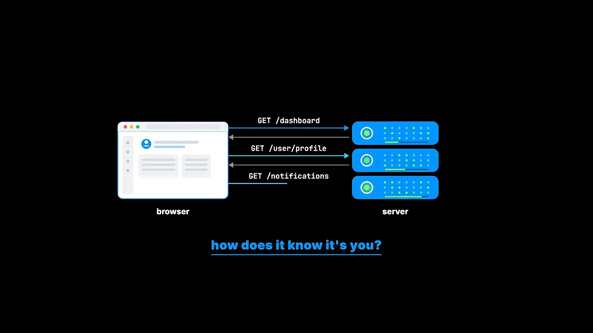
누구인가, 그리고 무엇을 해도 되는가
영상은 사진 공유 앱을 쓰는 Rahul이라는 사용자 한 명을 끝까지 따라가요. Rahul이 이메일과 비밀번호를 넣으면 서버가 자격 증명을 확인해요. 맞으면 서버는 Rahul이 누구인지 알게 돼요. 이게 인증이에요.
그런데 Rahul이 자기 사진첩을 보다가 URL(Uniform Resource Locator)을 바꿔서 다른 사람의 비공개 사진을 열려고 해요. 아래 화면에서 요청 GET /photos/another-user에 서버가 빨간 글씨로 403 Forbidden을 돌려줘요. 로그인은 했지만 거기까지는 허락되지 않은 거예요. Rahul이 무엇을 할 수 있고 없는지 정하는 이 판단이 인가예요.
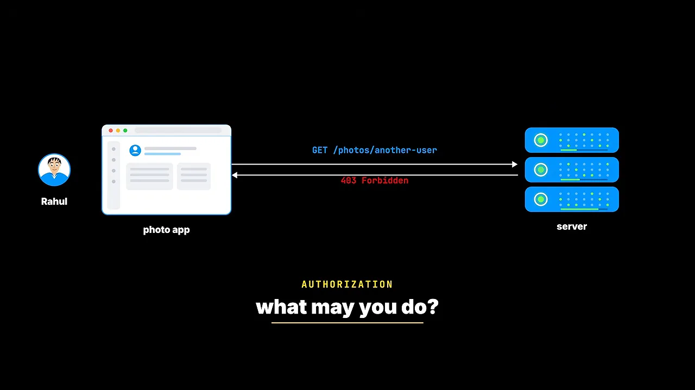
영상은 둘을 카드 두 장으로 정리해요. 파란 사람 아이콘 카드가 인증으로 '신원을 확인한다', 노란 자물쇠 카드가 인가로 '접근을 결정한다'예요.
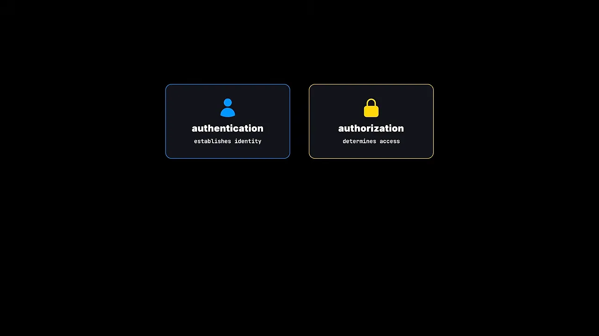
여기서 진짜 문제가 드러나요. 서버는 로그인 순간에는 Rahul을 확인할 수 있어요. 하지만 HTTP(Hypertext Transfer Protocol)는 앞 요청을 누가 보냈는지 스스로 기억하지 않아요. 따로따로 오는 요청을 같은 사용자에게 이어 줄 장치가 필요해요. 다음 섹션이 그 장치예요.
세션과 쿠키: 서버가 로그인을 기억하는 법
영상은 커피숍 영수증으로 시작해요. 돈을 내면 주문 번호가 적힌 영수증을 받고, 카운터 안쪽에서는 그 번호가 어느 주문인지 적어 둬요. 화면에서 Rahul이 order + pay를 보내고 receipt – order no. 7을 돌려받아요. 번호가 불리면 영수증을 보여 주고 커피를 받아 가죠.
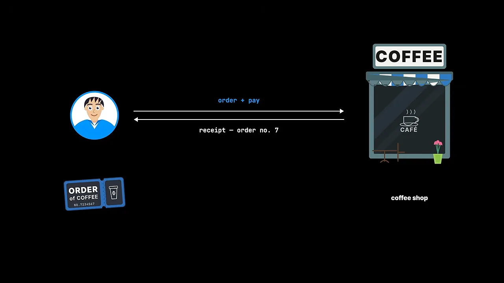
쿠키는 표, 세션은 기록
로그인에 성공하면 서버가 세션을 만들어요. 서버 쪽 공책에 세션 ID와 사용자를 한 줄 적어 두는 거예요. 그리고 무작위로 만든 세션 ID를 쿠키에 담아 브라우저에 보내요. 쿠키는 브라우저가 저장하는 작은 데이터 조각일 뿐이에요.
아래 화면에서 오른쪽 보라색 sessions notebook 표를 보세요. sid 12 → Priya, sid 7 → Rahul이 적혀 있어요. 브라우저가 다음 요청에 쿠키를 붙여 보내면 서버가 look up sid로 이 표를 찾아 오른쪽 아래처럼 it's Rahul이라고 알아내요.
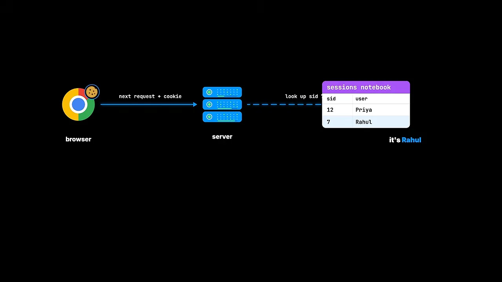
서버가 두 대가 되면
앱이 인기를 끌어서 서버를 한 대 더 붙였다고 해 볼게요. 아래 시퀀스 그림의 왼쪽 위부터 읽으면 돼요. 로그인은 server one에서 했고, set-cookie: session id 7을 받아 브라우저가 쿠키를 저장했어요. 그런데 맨 아래 빨간 화살표처럼 다음 요청이 빨간색 server two로 가요. server two의 공책에는 Rahul이 없어요. 세션은 분명 있는데, 다른 서버가 모를 뿐이에요.
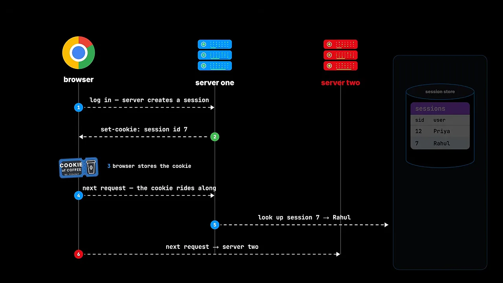
영상은 해결책을 두 갈래로 보여 줘요. 왼쪽은 모든 서버가 읽는 공유 세션 저장소예요. 여전히 세션 방식이에요. 오른쪽은 조회 없이 스스로 검증되는 토큰이고, 화면 아래 작은 글씨로 no lookup needed – a JWT라고 적혀 있어요.
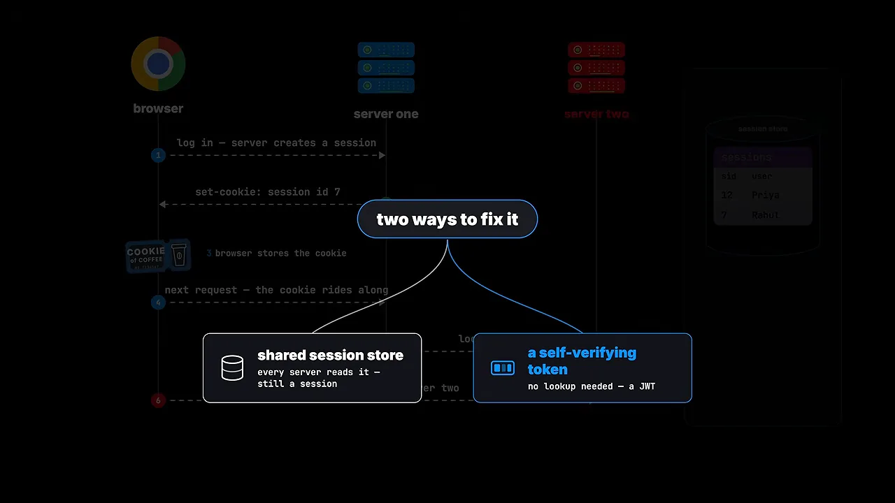
JWT: 조회 없이 검증하는 토큰
JWT 흐름은 로그인부터 다시 따라가요. 아래 그림은 위아래 두 줄로 나뉘어 있어요. 윗줄이 로그인이에요. ① 사용자가 이메일과 비밀번호로 로그인하고, ② 브라우저가 서버에 보내면, ③ 서버가 create & sign JWT, 즉 비밀 키로 서명한 토큰을 만들어 ④ 돌려줘요. 브라우저는 이걸 저장해 두고 이후 요청에 써요.
아랫줄이 그다음 요청이에요. ⑤ Rahul이 보호된 페이지를 열면 ⑥ 브라우저가 토큰을 Authorization: Bearer <token> 헤더에 담아 보내요. ⑦ 서버는 verify signature + check claims (aud · exp)를 해요. 서명부터 검증하고, 토큰이 조금이라도 바뀌었으면 여기서 실패해요. 그다음 대상(aud)과 만료(exp) 같은 클레임을 확인하고 나서야 토큰을 믿고 ⑧ 데이터를 돌려줘요.
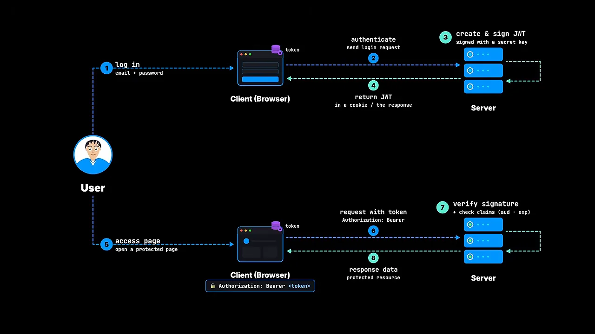
토큰 안에는 무엇이 있나요
JWT는 세 부분이에요. 아래 화면의 흰 카드에 HEADER, PAYLOAD, SIGNATURE가 차례로 있고, 오른쪽에 각각의 실제 내용이 있어요. 헤더는 "alg": "HS256"처럼 알고리즘을 적고, 페이로드는 sub, name, exp 같은 클레임을 담아요. 서명은 헤더와 페이로드를 비밀 키로 HMACSHA256 처리한 값이라 내용이 바뀌지 않았음을 증명해요.
화면 아래 Signed ≠ Encrypted가 이 섹션에서 가장 중요한 한 줄이에요. 서명된 JWT는 암호화된 게 아니에요. 페이로드는 누구나 디코딩해서 읽을 수 있어요. 그래서 비밀번호나 개인 정보 같은 비밀은 절대 넣으면 안 돼요.
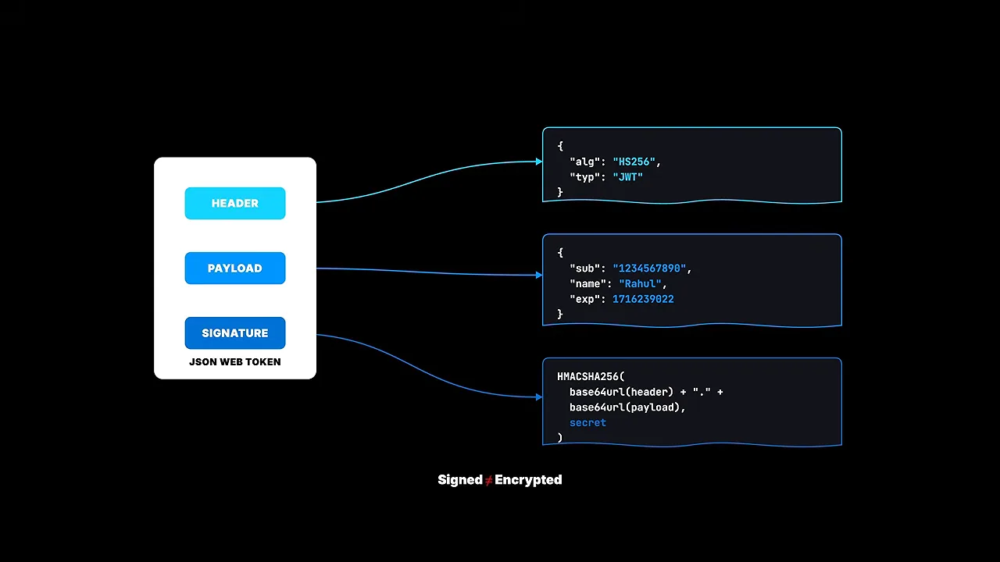
세션보다 낫지는 않아요
토큰이 자기 완결적이라 어느 서버든 조회 없이 검증할 수 있어요. 앞 섹션의 서버 두 대 문제가 사라지죠. 대신 대가가 있어요. 아래 비교 카드를 보면 세션은 초록 체크로 '바로 폐기할 수 있음', 빨간 X로 '확장하려면 공유 저장소 필요'예요. JWT는 반대로 초록 체크가 '조회 없이 검증', 빨간 X가 '만료될 때까지 유효'예요.
Rahul이 로그아웃하면 세션은 그 자리에서 지울 수 있어요. JWT는 따로 폐기 장치를 두지 않는 한 만료될 때까지 살아 있어요. 그래서 영상은 JWT가 자동으로 더 좋은 게 아니라고 해요.
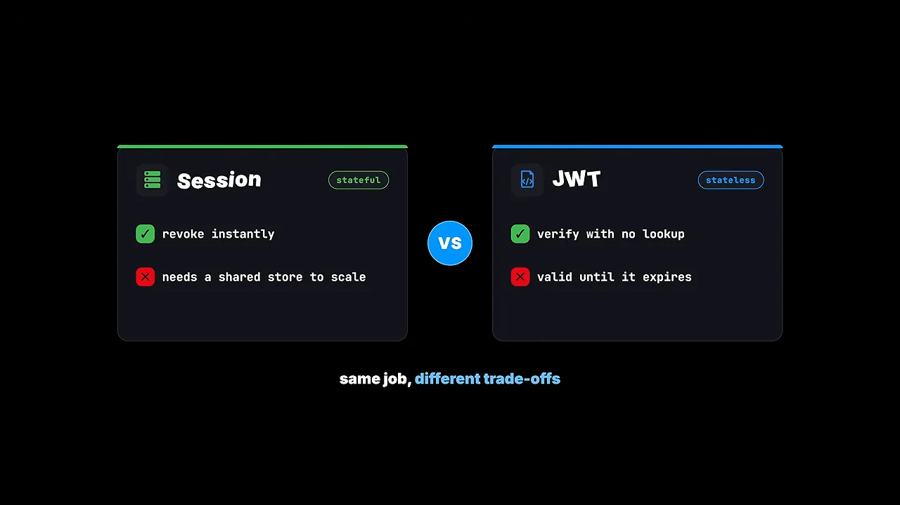
액세스 토큰과 리프레시 토큰
귀한 표 한 장을 떠올려 보세요. 누구든 그 표를 들고 있으면 쓸 수 있고, 시스템은 내미는 사람이 진짜 주인인지 몰라요. 베어러 토큰이 바로 이런 거예요. 공격자가 Rahul의 토큰을 훔치면 토큰이 만료되거나 거부될 때까지 Rahul 행세를 할 수 있어요. 그럼 토큰을 도둑맞았을 때 피해를 어떻게 줄일까요?
토큰 두 개, 역할 두 개
흔한 답은 역할이 다른 토큰 두 개를 쓰는 거예요. 아래 카드의 노란 테두리 왼쪽이 액세스 토큰으로 short-lived 딱지가 붙어 있어요. 요청마다 함께 보내고, 수명이 짧고, 꼭 필요한 권한만 가져요. 파란 테두리 오른쪽이 리프레시 토큰이에요. long-lived 딱지를 달고, 만료된 액세스 토큰을 새로 받아 오는 데 써요. 오래 접근을 이어 주는 열쇠라 빨간 X로 '각별히 지켜야 함'이 붙어 있어요.
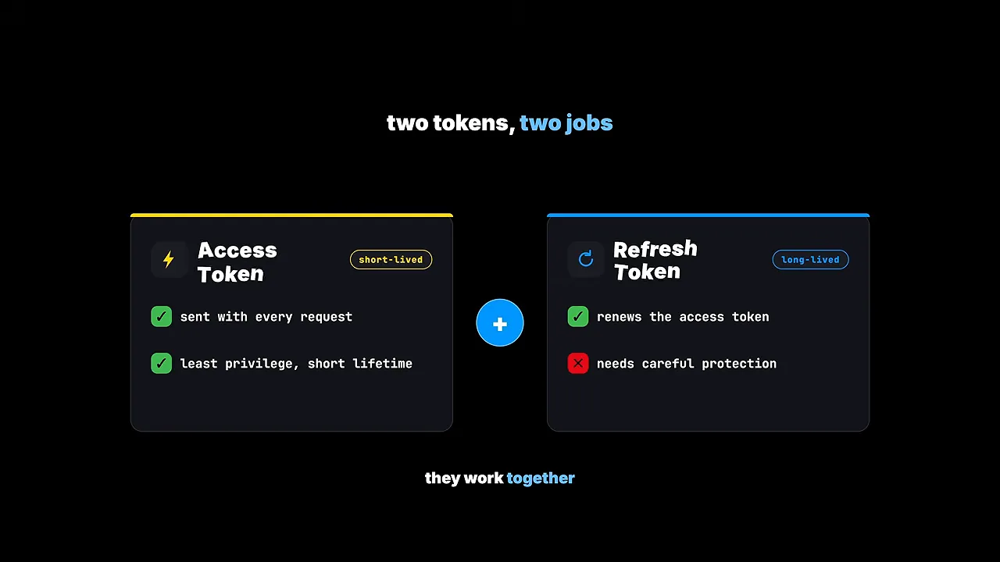
만료되면 어떻게 이어지나요
아래 시퀀스 그림은 세 줄이에요. 왼쪽 Your App, 가운데 Authorization Server(인가 서버), 오른쪽 Resource Server(리소스 서버)예요. 위에서부터 읽으면 이래요.
- 앱이 인가 서버에 Authorization Grant를 보내요 — 인가 서버가 로그인을 처리하고 액세스 토큰과 리프레시 토큰을 함께 돌려줘요.
- 앱이 액세스 토큰을 들고 리소스 서버에 요청해요 — 토큰이 유효하니 보호된 리소스를 받아요.
- 시간이 지나 빨간 딱지
Access Token Expires가 붙어요 — 옛 토큰으로 다시 요청하면 리소스 서버가Invalid Token Response로 답해요. - 앱이 리프레시 토큰을 인가 서버에 보내요 — 새 액세스 토큰이 오고, 마지막 줄
refresh token rotated처럼 리프레시 토큰도 새것으로 바뀌어 옛것은 더 못 써요.
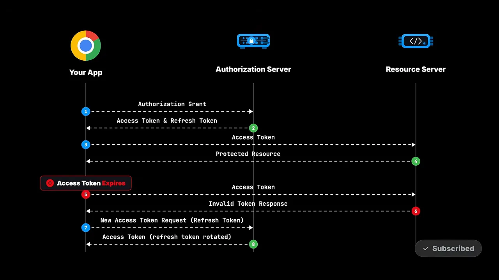
영상은 핵심을 카드 두 장으로 다시 묶어요. 짧은 수명의 액세스 토큰은 훔친 토큰이 쓸 수 있는 시간을 줄이고, 폐기할 수 있는 리프레시 토큰은 보호와 폐기로 장기 접근을 통제해요. 그런데 화면 아래 빨간 딱지를 보세요. theft risk is not zero, 탈취 위험이 0이 되지는 않는다는 뜻이에요. 정확한 동작은 설계마다 달라요.
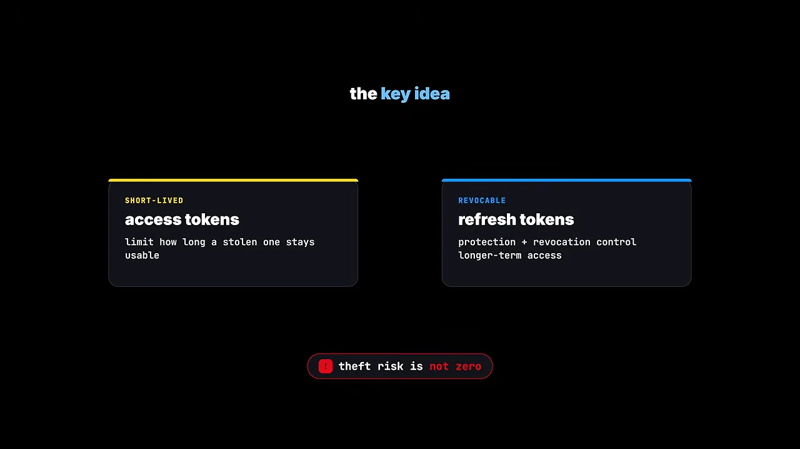
SSO: 한 번 로그인으로 여러 앱
지금까지는 Rahul이 앱 하나를 쓰는 이야기였어요. 회사에서 앱 열 개를 쓴다면 열 번 따로 로그인해야 할까요? 영상은 Google 앱으로 예를 들어요. 아래 화면에 Gmail, Drive, Docs가 각자 이메일·비밀번호 칸과 Sign in 버튼을 달고 있고, 아래 빨간 딱지에 three separate logins – inconvenient라고 적혀 있어요. 번거롭고 관리도 어려워요.
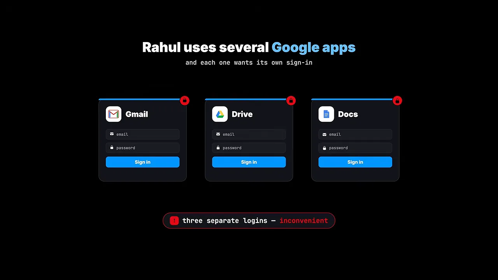
SSO는 믿을 수 있는 아이덴티티 공급자 한 곳에서 한 번 로그인하면 연결된 모든 앱에 들어가게 해 줘요. 영상은 IdP를 '중앙 로그인 창구'에 비유해요. 앱마다 로그인을 따로 처리하지 않고, 모두 이 한 곳을 믿고 맡기는 거예요.
두 번째 앱부터는 로그인을 건너뛰어요
아래 그림은 두 흐름이에요. 윗줄 ① Login Flow가 첫 앱 Gmail이에요. ① 세션 없이 Gmail을 열면 ② Gmail이 브라우저를 IdP인 Google로 보내요. ③ Google이 로그인 화면을 띄우고 Rahul이 자격 증명을 넣으면 ④ Google이 세션을 만들고 토큰을 발급해요. ⑤ 브라우저가 그걸 Gmail에 넘기고 ⑥⑦ Gmail이 검증한 뒤 화면을 보여 줘요.
아랫줄 ② Access Flow가 핵심이에요. ⑧ 조금 뒤 Drive를 열면 ⑨⑩ Drive도 Google로 보내요. 그런데 ⑪ 초록 글씨 skips login ✓ already signed in을 보세요. Google에 이미 세션이 있어서 로그인 화면 없이 ⑫ 바로 새 토큰을 줘요. ⑬⑭ Drive가 토큰을 검증하고 ⑮ 접근을 허락해요.
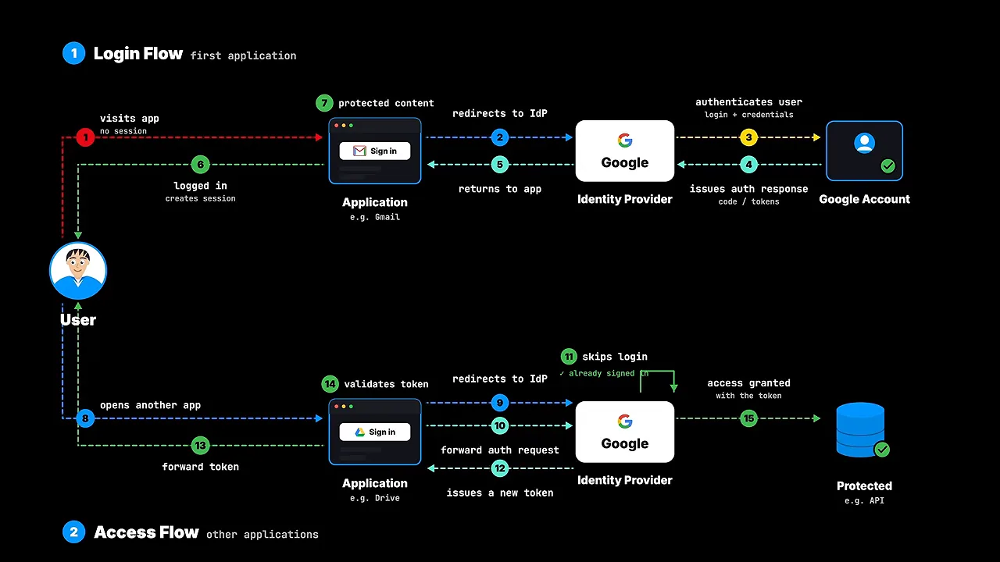
영상이 짚는 요점은 SSO가 로그인 경험이지 토큰 형식이 아니라는 거예요. 한 번 로그인하고 다른 앱을 열면 그냥 들어가지는 경험을 말해요. 이걸 받쳐 주는 프로토콜로 OpenID Connect와 SAML(Security Assertion Markup Language)을 들어요.
OAuth 2.0: 비밀번호 없이 권한 빌려주기
이번엔 바깥 앱이에요. Rahul이 사진 인화 앱 PhotoPrint로 사진을 뽑고 싶은데, 사진은 Google Photos에 있어요. PhotoPrint가 그 사진을 읽을 권한이 필요해요.
제일 쉬운 답은 Google 비밀번호를 알려 주는 거예요. 아래 화면 왼쪽이 그런 가짜 로그인 창이고, 오른쪽에 그 비밀번호로 열리는 것들이 나열돼 있어요. 초록 체크는 '사진 읽기' 하나뿐이고, 나머지 '메일 읽기', '파일 삭제', '비밀번호 변경', '어디서든 나로 행동하기'는 모두 빨간색이에요. 아래 딱지가 결론이에요. 필요한 것보다 훨씬 많은, 계정 전체를 넘기게 돼요.
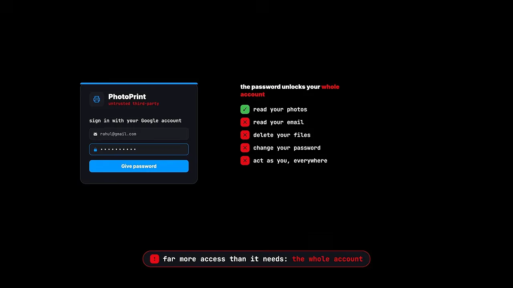
영상은 발레파킹 키로 비유해요. 주차는 하게 해 주지만 내 물건을 전부 열지는 못하는 키예요. 화면의 열쇠 아래에 photos only · read only · this month only라고 적혀 있어요. 사진만, 읽기만, 이번 달만이에요. OAuth에서 이렇게 '무엇에 얼마나'를 정하는 게 스코프예요.
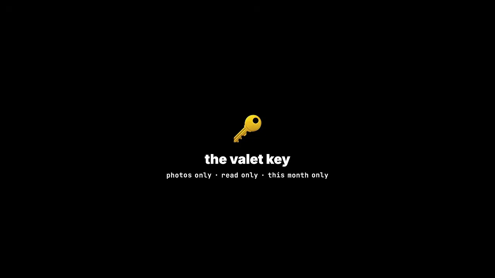
전체 흐름 한 장
아래 그림은 번호를 따라 읽으면 돼요. 위쪽에 PhotoPrint, 가운데 인가 서버 Google(/authorize, /introspect, /token), 오른쪽에 리소스 서버 Google Photos(/api)가 있어요.
- ①② Rahul이 PhotoPrint에서 연결을 누르면 PhotoPrint가 Google에 인가 요청을 보내요
- ③④⑤ Google이 자기 로그인 화면으로 보내고, Rahul이 거기서 로그인해요 — 비밀번호는 Google에만 들어가고 PhotoPrint는 보지 못해요.
- Google이 동의를 묻고 Rahul이 허락하면 ⑥ 인가 코드를 PhotoPrint에 줘요
- ⑦⑧ PhotoPrint가 그 코드를
/token에 보내 액세스 토큰으로 바꿔요 — 보라색 선이에요. - ⑨ PhotoPrint가 액세스 토큰으로 Google Photos API(Application Programming Interface)를 불러요 — Google Photos는
/introspect로 Google에 토큰을 확인하고 스코프를 따진 뒤 사진만 돌려줘요.
가운데 아래 PhotoPrint 카드가 PhotoPrint 입장에서 받은 것을 정리해요. Authorization Code, Access Token, Resource 순서로 체크가 붙어요. 사진은 받았지만 비밀번호는 끝까지 받지 않았어요.
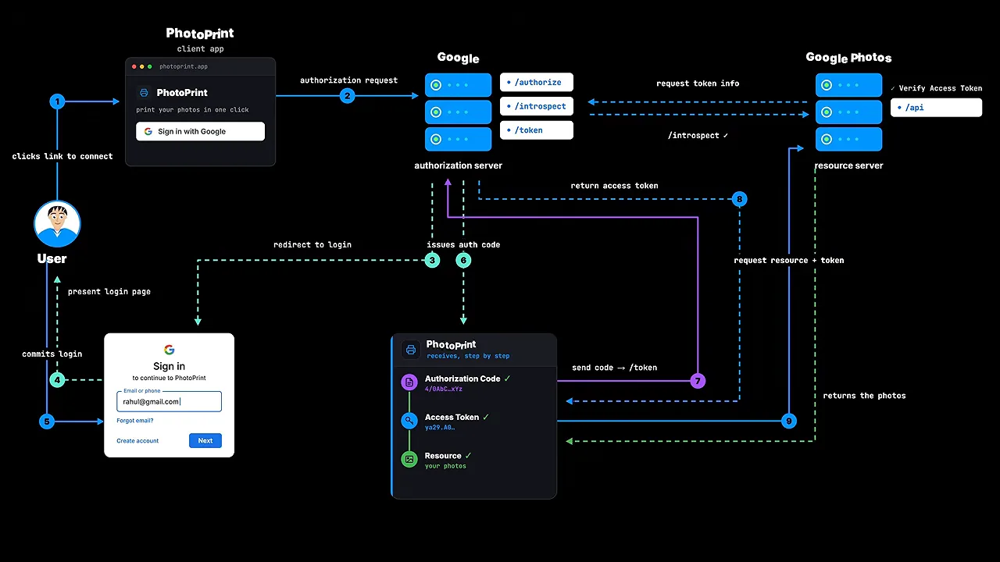
OAuth는 신원을 알려 주지 않아요
영상은 OAuth를 위임된 접근을 위한 인가 프레임워크라고 정의해요. 그리고 첫 질문으로 돌아가요. 인증은 '누구인가'를 묻는데, OAuth는 '어떤 접근이 허락됐는가'에 답해요. 아래 카드 두 장이 이 차이예요. 파란 자물쇠 OAuth는 '해도 되는 것', 보라 사람 아이콘 identity는 '실제로 누구인지'예요.
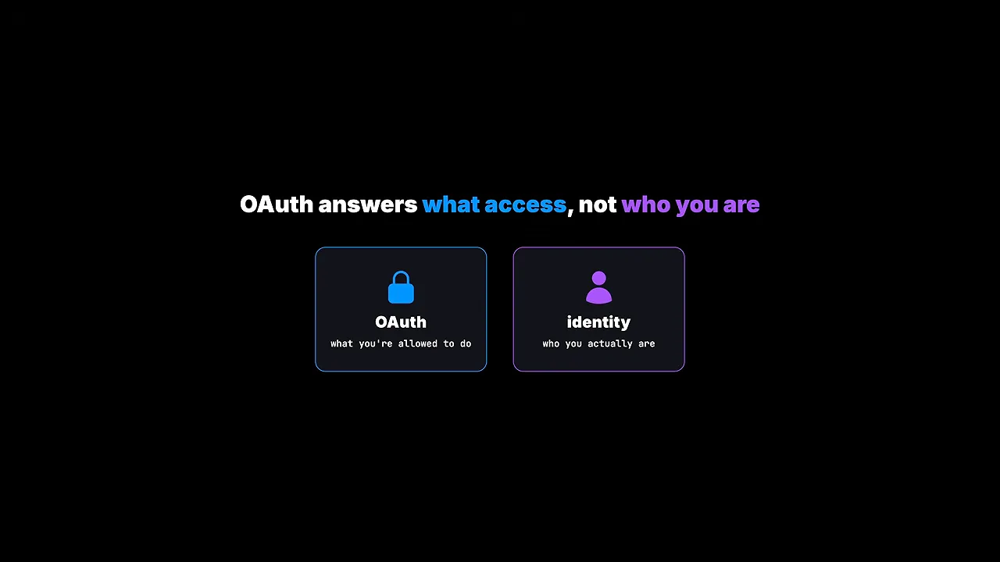
OpenID Connect, 그리고 일곱 조각 엮기
OpenID Connect(OIDC)는 OAuth 위에 아이덴티티 계층을 얹어요. 앱이 IdP를 통해 사용자를 인증하고, 그 인증 결과를 전달받게 해 줘요. 이번에도 수단은 토큰이에요. IdP가 ID 토큰을 발급하고, 이건 보통 사용자에 대한 클레임을 담은 서명된 JWT예요.
아래 화면의 ID Token 카드를 보세요. 오른쪽 위에 signed JWT 딱지가 있고, sub: rahul_8842, name: Rahul, issued by: Google, expires: 3:00 PM이 적혀 있어요. 맨 아래 초록 글씨는 verified & signed by Google이에요. 앱은 이 서명을 검증해서 사용자가 누구인지 알아요.
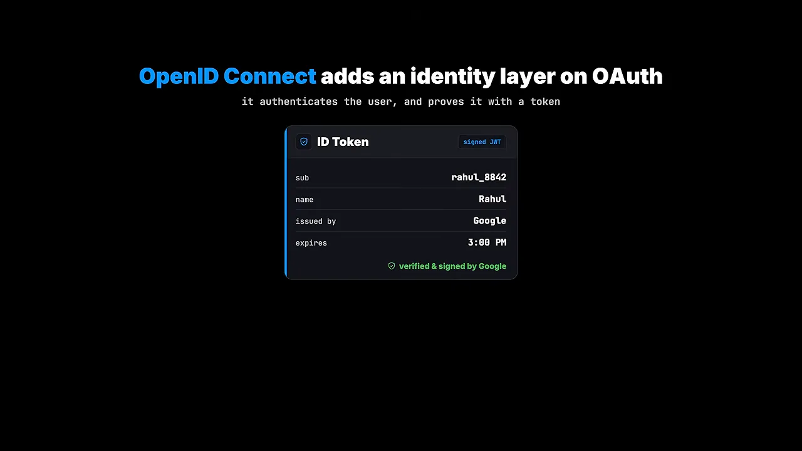
OAuth 흐름에 토큰 하나를 더해요
Rahul이 'Google로 로그인'을 누르면 무슨 일이 생길까요? 방금 본 OAuth 흐름이 그대로 돌아가요. Google로 보내고, 로그인하고, 코드를 토큰으로 바꿔요. 새로운 건 딱 하나예요. 아래 화면 오른쪽 보라색 상자처럼, 코드를 토큰으로 바꾸는 단계에서 앱이 서명된 ID 토큰도 함께 받아요. 왼쪽 PhotoPrint 카드 맨 아래에 보라색 ID Token ✓ 줄이 새로 생긴 게 그 차이예요.
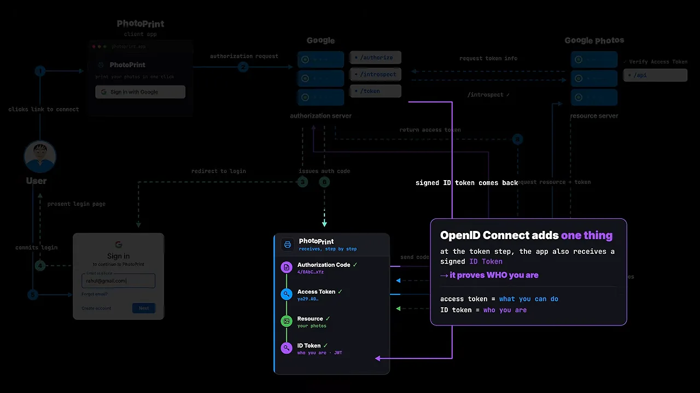
그럼 PhotoPrint 예시에서는 왜 ID 토큰이 없었을까요? 아래 화면이 답해요. PhotoPrint가 요청한 건 '내 사진에 대한 접근'이었고, 그래서 액세스 토큰만 받았어요. Rahul이 누구인지는 애초에 알 필요가 없었어요. 신원도 필요했다면 ID 토큰을 하나 더 요청하면 되고, 흐름은 그대로예요.
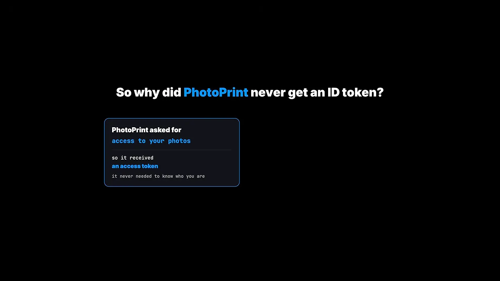
헷갈리기 쉬운 토큰 세 가지
영상 후반에 토큰이 세 종류나 나와요. 영상이 말한 역할만 모아 보면 이래요.
| 토큰 | 누구에게 보내나요 | 하는 일 | 영상이 강조한 점 |
|---|---|---|---|
| 액세스 토큰 | 리소스 서버 (요청마다) | 보호된 리소스에 접근해요 | 수명이 짧고 권한이 최소예요. 신원을 증명하지 않아요 |
| 리프레시 토큰 | 인가 서버 (만료됐을 때만) | 새 액세스 토큰을 받아 와요 | 오래가니 각별히 지켜요. 쓸 때마다 회전될 수 있어요 |
| ID 토큰 | 앱이 직접 검증해요 | 사용자가 누구인지 알려 줘요 | 보통 서명된 JWT예요. OIDC에서만 와요 |
SSO, OAuth, OIDC는 어떻게 겹치나요
세 이름이 늘 같이 나와서 헷갈려요. 영상이 한 말만으로 관계를 그리면 아래처럼 돼요. 맨 아래 OAuth가 위임된 접근을 맡고, OIDC가 그 위에 ID 토큰을 얹어요. SSO는 맨 위의 경험이고, 영상은 이걸 받치는 프로토콜로 OIDC와 SAML을 들었어요.
일곱 조각을 한 시스템으로
영상은 마지막에 일곱 개념을 가운데 Auth System에 하나씩 연결해요. 아래 화면에서 가운데 원을 중심으로 Authentication, Authorization, Sessions & Cookies, JWT, Access + Refresh, SSO, OAuth + OIDC가 둘러싸고, 각 아이콘 밑에 한 줄 설명이 달려 있어요.
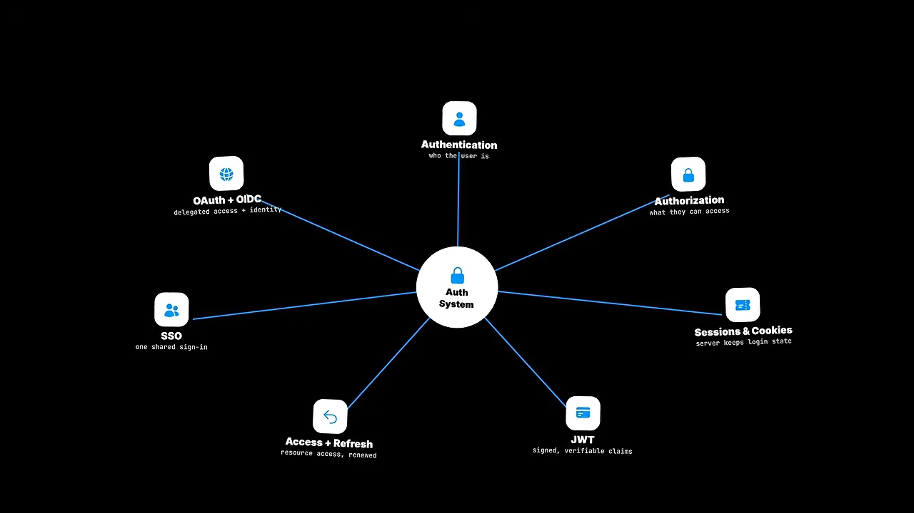
영상이 말로 정리한 한 줄씩을 표로 옮겼어요.
| 개념 | 한 줄 역할 |
|---|---|
| 인증 | 사용자가 누구인지 확인해요 |
| 인가 | 무엇에 접근할 수 있는지 정해요 |
| 세션 | 서버가 로그인 상태를 들고 있어요. 보통 쿠키 속 세션 ID로 이어져요 |
| JWT | 서버가 검증할 수 있는 서명된 클레임을 나르는 표준 형식이에요 |
| 액세스·리프레시 토큰 | 액세스 토큰은 보호된 리소스에 닿고, 리프레시 토큰은 그걸 갱신해요 |
| SSO | 공유된 한 번의 로그인이에요 |
| OAuth · OIDC | OAuth는 위임된 접근이고, OIDC는 그 위에 신원을 더해요 |
영상의 결론은 이거예요. 각 조각이 어떤 역할을 하는지 알면, 유행하는 도구를 고르는 대신 의도를 갖고 인증을 설계할 수 있어요.
These are not seven competing choices. They are pieces that work together.
이건 서로 경쟁하는 일곱 가지 선택지가 아니에요. 함께 움직이는 부품이에요.
— 영상 14:38